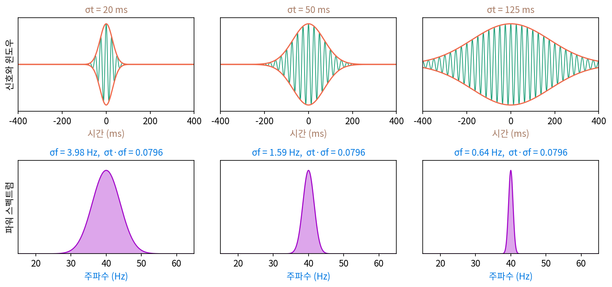
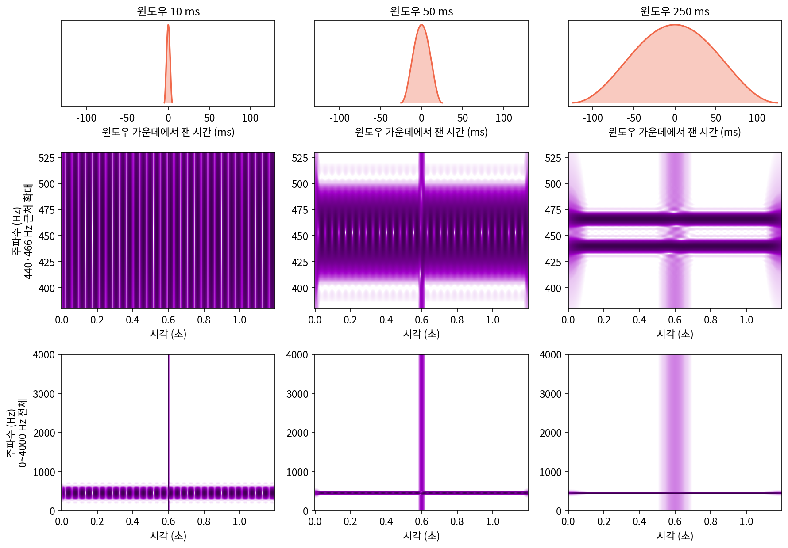
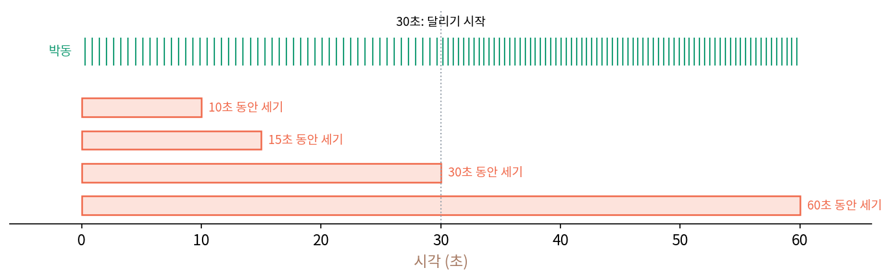
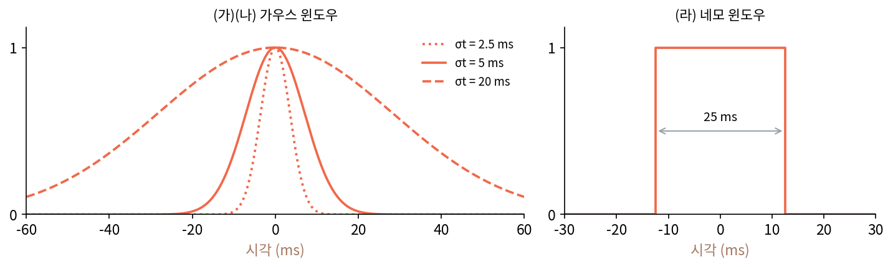
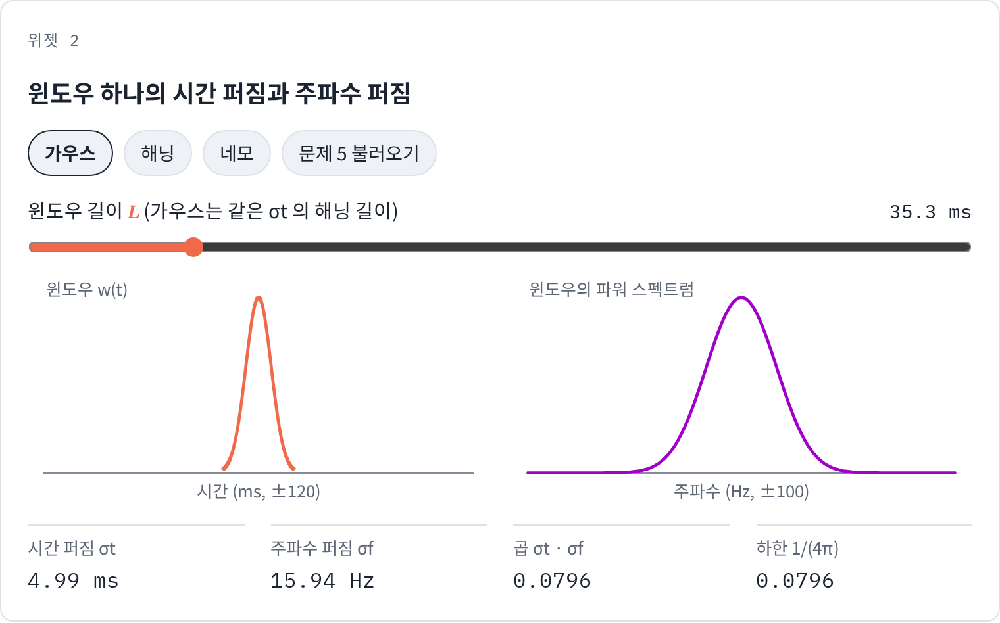
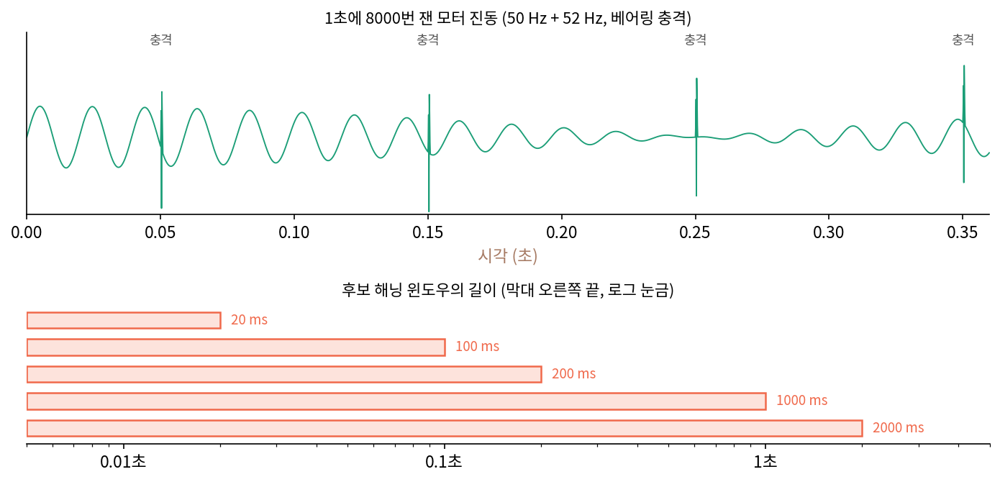
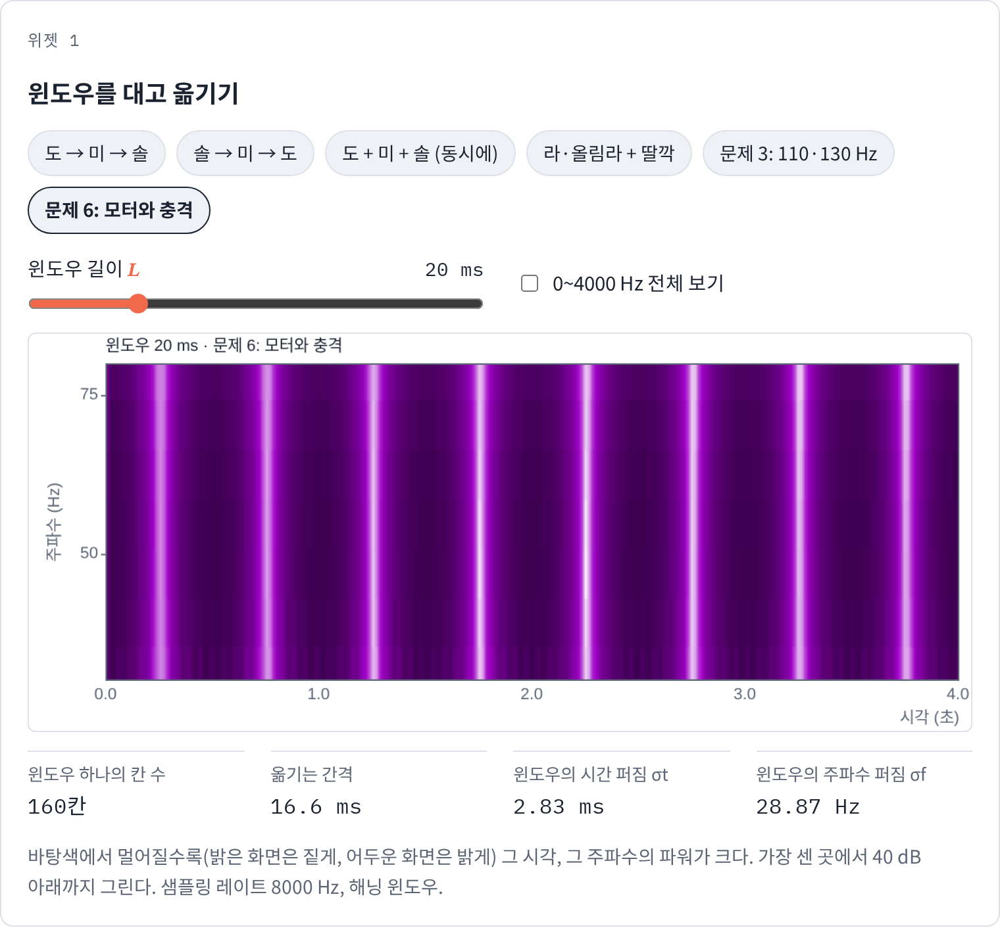

불확정성: 짧은 윈도우는 「언제」를, 긴 윈도우는 「몇 Hz」를 또렷하게
윈도우를 대고 옮기면 「언제」를 되찾을 수 있었다. 그런데 Whisper 의 25 ms 윈도우는 20 Hz 떨어진 두 목소리를 가르지 못했고, 윈도우를 늘리자 갈라지는 대신 시각이 흐려질 것 같았다. 윈도우 길이를 잘 고르면 둘 다 또렷하게 할 수 있을까, 아니면 무언가가 그것을 막고 있을까?
역사: 양자 역학에서 빌려 온 부등식
1927년 하이젠베르크(Werner Heisenberg)는 원자 속 입자의 자리와 운동량을 동시에 한없이 정확하게 정할 수는 없다는 생각을 내놓았다. 같은 해 케너드(Earle Kennard)가 두 퍼짐의 곱에 하한이 있다는 부등식을 증명했다. 수학으로 보면 그 부등식은 어떤 함수와 그 함수의 푸리에 변환이 동시에 좁을 수 없다는 말이다. 입자의 파동함수를 자리로 적은 것과 운동량으로 적은 것은 서로의 푸리에 변환이기 때문이다.
가보르는 1946년 「통신 이론」에서 같은 수학을 신호에 그대로 옮기고, 논문 요약에 이렇게 적었다. 「끝없이 이어지지 않는 신호의 주파수는 어느 정도의 부정확함을 안고서만 정할 수 있고, 그 부정확함은 신호의 길이에 반비례한다. 그 거꾸로도 마찬가지다.」 그는 이것을 「불확정 관계」라 불렀다. 그러니 정보 그림의 평면은 점으로 쪼갤 수 없고, 넓이가 정해진 칸으로만 쪼갤 수 있다. 가보르는 그 평면에서 가장 작은 넓이를 차지하는 「기본 신호」들이 있다고 보이고, 기본 신호 하나가 자료 하나를, 말하자면 「정보의 양자」 하나를 실어 나른다고 썼다. 그가 찾은 기본 신호는 가우스 종 모양의 윈도우를 씌운 사인 물결이었다. 시간–주파수 평면의 이 정보 한 칸에는 「로곤(logon)」이라는 이름이 붙었다.


오래 재면 주파수가 정확해지고 짧게 재면 순간이 정확하다는 건 그냥 당연한 것 같은데요. 그걸 말하려고 양자 역학까지 빌려 와야 했어요?

「대략 반비례한다」까지는 당연해 보이죠. 그런데 두 퍼짐의 곱이 정확히 얼마 아래로는 못 내려가는지, 어떤 윈도우가 그 하한에 닿는지는 증명이 있어야 말할 수 있어요.

케너드의 부등식이 1927년에 그 증명을 이미 해 둔 거네요. 파동함수를 자리로 적은 것과 운동량으로 적은 것이 서로의 푸리에 변환이니까, 같은 부등식이 신호에도 그대로 서고요.

그 부등식이 없으면, 스펙트럼이 흐린 게 장비가 모자라서인지 어떤 장비로도 못 넘는 벽인지 가를 길이 없어요. 물리학자였던 가보르가 그 두 세계를 이은 거예요.

그래도 윈도우 모양을 아주 잘 깎으면 넘을 수 있을 것 같은데요. 로곤 한 칸보다 작은 칸이 정말 없어요?

가보르는 가우스 윈도우가 가장 작은 칸을 차지한다고 했잖아. 그러면 다른 윈도우의 곱은 하한보다 얼마나 큰지 재 보면 되겠네. 이 장에서 쓴 해닝 윈도우는 하한에 얼마나 가까울까?
라와 올림라, 그리고 딸깍 소리
윈도우 길이 하나로 무엇을 얻고 무엇을 잃는지 숫자로 보자. 라(440 Hz)와 반음 위인 올림라(466.16 Hz)를 1.2초 동안 함께 울리고, 0.6초에 한 칸짜리 딸깍 소리를 넣는다. 두 음은 26.16 Hz 떨어져 있고, 딸깍 소리는 한순간에 모든 주파수로 퍼진다. 이 소리 하나로 「가까운 두 주파수를 가를 수 있나」와 「한순간을 짚을 수 있나」를 함께 시험할 수 있다. 해닝 윈도우 길이를 10 ms, 50 ms, 250 ms 로 바꿔 단시간 푸리에 변환을 했다.
| 윈도우 길이 | 두 음 사이(453 Hz) 파워 ÷ 440 Hz 파워 | 두 음 | 딸깍 소리가 가장 센 때의 1/10 넘게 보이는 시간 폭 |
|---|---|---|---|
| 10 ms | 1.022 | 한 덩어리 | 6 ms |
| 50 ms | 1.045 | 한 덩어리 | 30 ms |
| 250 ms | 거의 0 | 둘로 갈라짐 | 154 ms |
윈도우가 짧으면 딸깍 소리는 6 ms 안에 찍히지만 두 음은 한 덩어리여서, 10 ms 그림을 들여다보면 그 덩어리가 1초에 26번 밝아졌다 어두워진다. 두 물결이 26.16 Hz 차이로 서로 보강했다 상쇄했다 하는 맥놀이를, 짧은 윈도우는 「주파수 둘」이 아니라 「시간에 따라 파워가 출렁이는 한 음」으로 본다. 윈도우가 250 ms 면 두 음이 두 줄로 갈라지는 대신 딸깍 소리가 154 ms 에 걸쳐 번진다. 두 음을 가르려면 윈도우 안에서 두 물결이 적어도 한 번은 서로 어긋날 시간, 1 ÷ 26.16 Hz = 38 ms 정도가 있어야 하고, 해닝 윈도우는 그보다 몇 배 길어야 한다.

왜 이렇게 될 수밖에 없을까? 소리에 윈도우를 곱하면, 끝없이 울리던 물결 하나의 날카로운 봉우리가 윈도우 자체의 스펙트럼 모양으로 번진다. 그러니 한 순간을 얼마나 좁게 짚느냐는 윈도우의 시간 폭이 정하고, 봉우리가 얼마나 넓게 번지느냐는 윈도우의 파워 스펙트럼 폭이 정한다. 두 폭을 표준편차로 재자. 윈도우 크기의 제곱 |w(t)|²를 시간 위의 분포로 보았을 때의 표준편차를 시간 퍼짐, 윈도우의 파워 스펙트럼을 주파수 위의 분포로 보았을 때의 표준편차를 주파수 퍼짐이라 하면 아래 부등식이 성립한다.
윈도우를 어떻게 만들든 시간 퍼짐과 주파수 퍼짐의 곱은 1/(4π) = 0.0796보다 작아지지 않는다는 이 부등식을 불확정성 원리 (짧으면 흐리고 길면 느리다 / uncertainty principle)라 하고, 가보르의 이름을 따 가보르 한계라고도 부른다. 등호는 가우스 종 모양 윈도우에서만 서지만, 해닝 윈도우도 곱이 0.0817로 하한에 가깝다. 해닝 윈도우 25 ms 는 σt = 3.54 ms, σf = 23.09 Hz이고, 100 ms 는 σt = 14.14 ms, σf = 5.77 Hz다. 윈도우를 네 배로 늘리면 시간 퍼짐은 네 배, 주파수 퍼짐은 4분의 1이 되고 곱은 0.0817로 같다. 윈도우 길이를 고르는 일은 정보 그림의 칸을 가로로 길게 할지 세로로 길게 할지를 고르는 일일 뿐, 칸의 넓이는 줄일 수 없다.
ML에서: 윈도우 셋으로 재는 손실
글을 소리로 읽어 주는 모델의 마지막 단계에는 스펙트로그램 같은 중간 표현을 받아 소리 칸을 만들어 내는 신경망(보코더)이 있다. 야마모토 류이치(Ryuichi Yamamoto)·송은우·김재민의 Parallel WaveGAN(2020)은 이 신경망을 학습할 때, 만든 소리와 진짜 소리의 단시간 푸리에 변환 크기(계수의 절댓값) 차이를 손실로 쓰되 윈도우 길이를 하나가 아닌 셋으로 잰다. 공개 코드의 LJSpeech 설정(1초에 22,050칸)은 해닝 윈도우 240칸, 600칸, 1200칸을 쓴다. 각각 10.9 ms, 27.2 ms, 54.4 ms 이고, 해닝 윈도우의 주파수 퍼짐은 53.0 Hz, 21.2 Hz, 10.6 Hz다. 세 윈도우의 손실을 더한 것이 학습이 줄이는 값인데, 왜 윈도우를 셋이나 쓰는지는 아래 문제 6에서 따진다.
문제 4. 맥박을 몇 초 동안 셀까
운동 앱이 손목 센서로 맥박을 셀 때는 정해진 시간 동안 센 박동 수에 곱해 분당 박동 수(bpm)로 바꾼다. (가) 10초, 15초, 30초, 60초 동안 세면 분당 박동 수는 몇 bpm 단위로 나오는가? (나) 달리기를 시작해 30초째에 맥박이 갑자기 올랐다. 60초 동안 센 값으로 그 순간을 알 수 있는가? (다) 「1 bpm 단위로 정확하면서 맥박이 바뀐 순간도 1초 안쪽으로 짚는」 세는 방법이 있는가?

(가)는 10초면 센 수 × 6이라 6 bpm 단위, 15초 × 4로 4 bpm, 30초 × 2로 2 bpm, 60초는 1 bpm이에요. (나)는 60초 세면 정확하니까 알 수 있죠.
60초 동안 센 값 하나가 120 bpm 이었다면, 처음 30초가 100이고 나중 30초가 140이었는지, 내내 120이었는지 가를 수 있나요?

아니요. 둘 다 60초에 120번이에요. 60초 묶음 안에서 언제 올랐는지는 숫자 하나에 묻혀요.
(다)는 안 될 것 같아. 1 bpm 은 1분에 한 번 차이니까, 박동 한 번의 차이를 가리려면 1분은 세야 해. 세는 시간이 T 초면 눈금이 60/T bpm, 바뀐 순간은 T 초 안쪽 어딘가야. 눈금 × 시간이 늘 60으로 같아.

주파수로 고치면요? bpm 을 Hz 로 바꿔서 같은 말을 해 봐요.

1 bpm 은 1/60 Hz니까, 눈금 60/T bpm 은 1/T Hz예요. 시간 폭은 T 초고요.

곱하면 1이네. 어디서 본 것 같은데?
단시간 푸리에 변환에서 곱이 1이던 두 값이 있었죠.

윈도우 길이와 주파수 빈 간격이요. 같은 구조네요. 박동을 세는 건 맥박 물결의 주파수를 재는 일이었어요.

레포트 마감 전날 몇 시간 일했는지 일주일 합계로만 적으면 「이번 주 20시간」은 정확한데 벼락치기를 했는지는 안 보이는 거죠.
문제 5. 가우스 윈도우의 퍼짐
가우스 종 모양 윈도우는 불확정성 원리의 등호를 이룬다. (가) 시간 퍼짐 σt = 5 ms 인 가우스 윈도우의 주파수 퍼짐 σf는 몇 Hz 인가? (나) σt를 2.5 ms, 20 ms 로 바꾸면? (다) 친구가 「σt = 1 ms, σf = 10 Hz 인 윈도우를 만들었다」고 한다. 믿어도 되는가? (라) 길이 25 ms 짜리 네모 윈도우(구간 안은 모두 1, 밖은 0)의 σt와 σf를 구하라. (위젯 2의 「문제 5 불러오기」와 「네모」 단추로 확인해 보자.)

(가)는 등호니까 σf = 1/(4π × 0.005) = 15.92 Hz요. (나)는 2.5 ms 면 31.83 Hz, 20 ms 면 3.98 Hz. (다)는 곱이 0.001 × 10 = 0.010이라 0.0796보다 작아요. 거짓말이에요.
맞아요. (라)는요?
σt는 균등분포 표준편차라 25/√12 = 7.22 ms요. σf는 코드로 윈도우의 스펙트럼을 구해서 표준편차를 내면… 돌릴 때마다 값이 달라요. 200 Hz 까지만 셈하면 28.8 Hz, 1000 Hz 까지면 63.8 Hz, 50,000 Hz 까지면 530 Hz예요.

셈하는 범위를 넓힐수록 계속 커지네. 네모 윈도우의 파워 스펙트럼은 꼬리가 1/f² 로 줄어드는데, 표준편차는 f² 를 곱해서 적분하니까 꼬리가 1이 돼서 끝없이 쌓여. σf가 무한대야.
그러면 부등식 σtσf ≥ 1/(4π)는 네모 윈도우에서 깨진 건가요?
깨진 게 아니라 아주 넉넉하게 성립한 거예요. 7.22 ms × 무한대니까요. 부등식은 하한만 말하니까, 퍼짐이 무한대인 윈도우도 규칙을 어기지 않아요. 다만 그런 윈도우는 쓸모가 없어요. 네모로 자르면 끝에서 값이 뚝 끊겨 없던 높은 주파수가 끝없이 생기니까요.

그래서 조각을 자를 때 굳이 해닝 윈도우를 곱했던 거네요. 네모로 자르면 단시간 푸리에 변환에 가짜 주파수가 번져요.

확률 수업에서 코시 분포는 평균도 분산도 없다고 배웠는데, 네모 윈도우의 파워 스펙트럼이 딱 그 꼬리 모양이었어.

문제 6. 기계 고장 진단 모델의 입력
공장 모터의 진동을 1초에 8000번 잰다. 정상 모터는 50 Hz 로 떨고, 축이 틀어지면 52 Hz 떨림이 섞이며, 베어링이 상하면 0.1초마다 1 ms 짜리 충격이 생긴다. 고장 진단 모델의 입력으로 스펙트로그램 하나를 쓰려 한다. (가) 해닝 윈도우 20 ms, 100 ms, 200 ms, 1000 ms, 2000 ms 가운데 50 Hz 와 52 Hz 를 가르는 윈도우는? (나) 충격을 하나씩 따로 보이게 하는 윈도우는? (다) 두 고장을 한 장의 스펙트로그램으로 모두 볼 수 있는가? 모델 설계자는 무엇을 할 수 있는가? (위젯 1의 「문제 6: 모터와 충격」으로 윈도우 길이를 바꿔 보자. 기본 화면은 30~80 Hz 확대이고, 「0~4000 Hz 전체 보기」를 켜면 충격이 보인다.)

위젯에서 재 보니 51 Hz 파워를 50 Hz 파워로 나눈 값이 20 ms 1.007, 100 ms 1.013, 200 ms 1.053, 1000 ms 1.007이라 다 한 덩어리고, 2000 ms 에서야 거의 0이 돼서 갈라져요. (가)는 2000 ms 요.
2 Hz 차이를 가르려면 두 물결이 한 번 어긋나는 데 1/2초, 해닝 윈도우면 그 몇 배니까 맞아. (나)는 충격 사이 띠의 파워가 가장 작을 때와 가장 클 때의 비로 보면, 20 ms 와 100 ms 는 0이라 충격이 하나씩 보이고, 200 ms 는 0.5, 1000 ms 부터는 1이라 다 뭉개져.
그럼 (다)는 그 사이 어딘가를 고르면 되겠네요. 500 ms 쯤?
50 Hz 와 52 Hz 를 가르는 데 필요한 윈도우 길이와, 0.1초 간격 충격을 가르는 데 필요한 윈도우 길이를 나란히 적어 봐요.

앞은 2초는 돼야 하고, 뒤는 0.1초보다 짧아야 해요. 겹치는 길이가 없어요.

문제 4(맥박을 세는 시간)랑 같은 구조네. 1 bpm 단위로 세면서 바뀐 순간을 1초 안쪽으로 짚을 수는 없었잖아.
윈도우 하나로 그 둘을 다 줄일 수 있을까요?
시간 퍼짐과 주파수 퍼짐의 곱을 못 줄이니까, 2 Hz 를 가를 만큼 세로로 좁은 칸은 가로로 길 수밖에 없어요. 한 장으로는 안 돼요.
그러면 설계자는요?
스펙트로그램을 두 장 만들어 함께 넣으면 돼요. 2초 윈도우 한 장, 20 ms 윈도우 한 장. 낮은 떨림은 긴 윈도우로, 짧은 충격은 짧은 윈도우로요.

아까 Parallel WaveGAN 이 손실을 윈도우 셋으로 잰 게 이래서였네요. 윈도우 하나로 재면 그 윈도우가 놓치는 크기 차이는 손실에 안 잡히니까, 길이가 다른 윈도우로 나눠 잡은 거예요.
